(up to last 14 days)
Daily view
Last update: 24 Jun 2026, 00:20 CEST
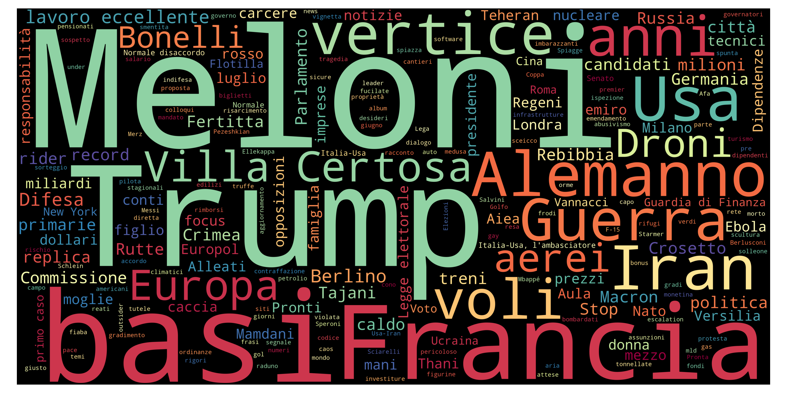
| Term | Frequency |
|---|---|
| giorno | 1 |
| caldo | 1 |
| allerta | 1 |
| città | 1 |
| oms | 1 |
| sanitario | 1 |
| europa | 1 |
| ispezione | 1 |
| trump | 1 |
| nucleare | 1 |
No phrases found for this day.
| Term | Current day frequency |
|---|---|
| caldo | 1 |
| allerta | 1 |
| europa | 1 |
No significantly increasing terms.
| Term | Difference | Current day frequency | Previous day frequency |
|---|---|---|---|
| nucleare | -4 | 1 | 5 |
| accordo | -2 | 1 | 3 |
| ispezione | -1 | 1 | 2 |
| trump | -1 | 1 | 2 |
| Term | Frequency |
|---|---|
| malfunction | 2 |
| halt | 2 |
| germany | 2 |
| rating | 1 |
| impact | 1 |
| greens | 1 |
| politic | 1 |
| scientist | 1 |
| Term | Frequency |
|---|---|
| germany rail network | 2 |
| Term | Current day frequency |
|---|---|
| germany | 2 |
| malfunction | 2 |
| germany rail network | 2 |
| rating | 1 |
| impact | 1 |
No significantly increasing terms.
| Term | Difference | Current day frequency | Previous day frequency |
|---|---|---|---|
| scientist | -1 | 1 | 2 |
| greens | -1 | 1 | 2 |
| politic | -1 | 1 | 2 |
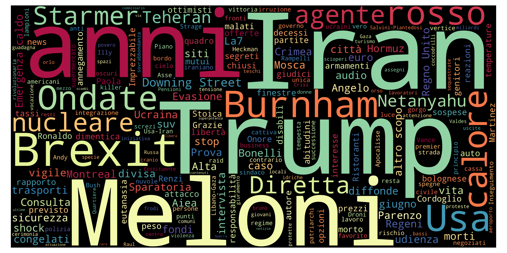
| Term | Frequency |
|---|---|
| meloni | 15 |
| libero | 6 |
| anno | 6 |
| iran | 6 |
| nucleare | 5 |
| normalità | 5 |
| libia | 5 |
| putin | 4 |
| attivista | 4 |
| giugno | 4 |
| Term | Frequency |
|---|---|
| euro digitale | 3 |
| emergenza caldo | 2 |
| tour eiffel | 2 |
| downing street | 2 |
| altro scopo | 2 |
| Term | Current day frequency |
|---|---|
| libero | 6 |
| normalità | 5 |
| libia | 5 |
| uomo | 4 |
| colpita | 4 |
| attivista | 4 |
| putin | 4 |
| audio | 3 |
| accordo | 3 |
| alimentare | 3 |
| Term | Difference | Current day frequency | Previous day frequency |
|---|---|---|---|
| meloni | 9 | 15 | 6 |
| nucleare | 4 | 5 | 1 |
| giugno | 3 | 4 | 1 |
| ucraina | 3 | 4 | 1 |
| russia | 2 | 3 | 1 |
| iran | 2 | 6 | 4 |
| agente | 2 | 3 | 1 |
| colloquio | 1 | 2 | 1 |
| sparatoria | 1 | 3 | 2 |
| via | 1 | 2 | 1 |
| Term | Difference | Current day frequency | Previous day frequency |
|---|---|---|---|
| morto | -7 | 4 | 11 |
| premier | -6 | 1 | 7 |
| trump | -5 | 2 | 7 |
| francia | -4 | 2 | 6 |
| anno | -4 | 6 | 10 |
| colombia | -4 | 1 | 5 |
| auto | -3 | 2 | 5 |
| caso | -3 | 1 | 4 |
| russo | -2 | 1 | 3 |
| guerra | -2 | 3 | 5 |
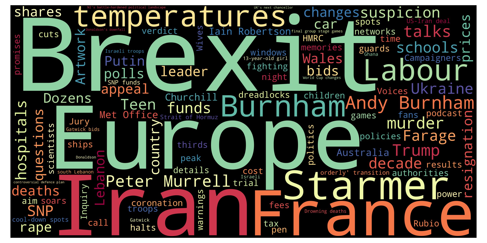
| Term | Frequency |
|---|---|
| brexit | 14 |
| europe | 9 |
| iran | 8 |
| france | 8 |
| starmer | 8 |
| temperature | 7 |
| burnham | 7 |
| labour | 7 |
| talk | 5 |
| murder | 5 |
| Term | Frequency |
|---|---|
| andy burnham | 7 |
| peter murrell | 5 |
| iain robertson | 3 |
| met office | 3 |
| cool spots | 2 |
| orderly transition | 2 |
| snp funds | 2 |
| us iran deal | 2 |
| strait of hormuz | 2 |
| old girl | 2 |
| Term | Current day frequency |
|---|---|
| murder | 5 |
| peter murrell | 5 |
| hospital | 4 |
| suspicion | 4 |
| fund | 4 |
| snp | 4 |
| lebanon | 3 |
| poll | 3 |
| churchill | 3 |
| question | 3 |
| Term | Difference | Current day frequency | Previous day frequency |
|---|---|---|---|
| brexit | 9 | 14 | 5 |
| europe | 6 | 9 | 3 |
| france | 4 | 8 | 4 |
| trump | 3 | 5 | 2 |
| farage | 3 | 4 | 1 |
| teen | 3 | 4 | 1 |
| talk | 2 | 5 | 3 |
| car | 2 | 3 | 1 |
| death | 2 | 3 | 1 |
| school | 2 | 4 | 2 |
| Term | Difference | Current day frequency | Previous day frequency |
|---|---|---|---|
| keir starmer | -20 | 2 | 22 |
| prime minister | -12 | 2 | 14 |
| starmer | -12 | 8 | 20 |
| andy burnham | -6 | 7 | 13 |
| offence | -5 | 1 | 6 |
| politic | -3 | 2 | 5 |
| iran | -3 | 8 | 11 |
| dozen | -2 | 3 | 5 |
| country | -2 | 3 | 5 |
| burnham | -2 | 7 | 9 |
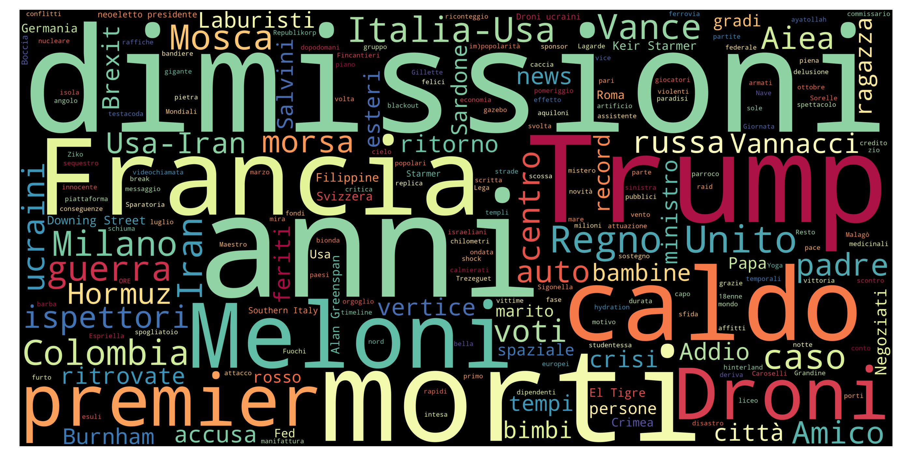
| Term | Frequency |
|---|---|
| morto | 11 |
| anno | 10 |
| dimissione | 9 |
| trump | 7 |
| premier | 7 |
| meloni | 6 |
| francia | 6 |
| guerra | 5 |
| auto | 5 |
| usa | 5 |
| Term | Frequency |
|---|---|
| regno unito | 4 |
| italia usa | 4 |
| keir starmer | 3 |
| quartiere ebraico | 2 |
| cinque vittime | 2 |
| downing street | 2 |
| neoeletto presidente | 2 |
| el tigre | 2 |
| droni ucraini | 2 |
| andy burnham | 2 |
| Term | Current day frequency |
|---|---|
| trump | 7 |
| premier | 7 |
| colombia | 5 |
| milano | 5 |
| caso | 4 |
| rapporto | 4 |
| montreal | 4 |
| voto | 4 |
| italia usa | 4 |
| attacco | 3 |
| Term | Difference | Current day frequency | Previous day frequency |
|---|---|---|---|
| morto | 7 | 11 | 4 |
| dimissione | 6 | 9 | 3 |
| anno | 5 | 10 | 5 |
| francia | 4 | 6 | 2 |
| guerra | 3 | 5 | 2 |
| drone | 3 | 4 | 1 |
| russo | 2 | 3 | 1 |
| scontro | 2 | 3 | 1 |
| bambino | 2 | 3 | 1 |
| centro | 2 | 3 | 1 |
| Term | Difference | Current day frequency | Previous day frequency |
|---|---|---|---|
| colloquio | -7 | 1 | 8 |
| iran | -7 | 4 | 11 |
| svizzera | -3 | 2 | 5 |
| ucraina | -2 | 1 | 3 |
| milione | -2 | 1 | 3 |
| mese | -2 | 1 | 3 |
| usa-iran | -2 | 2 | 4 |
| meloni | -1 | 6 | 7 |
| poco | -1 | 1 | 2 |
| mondiale | -1 | 1 | 2 |
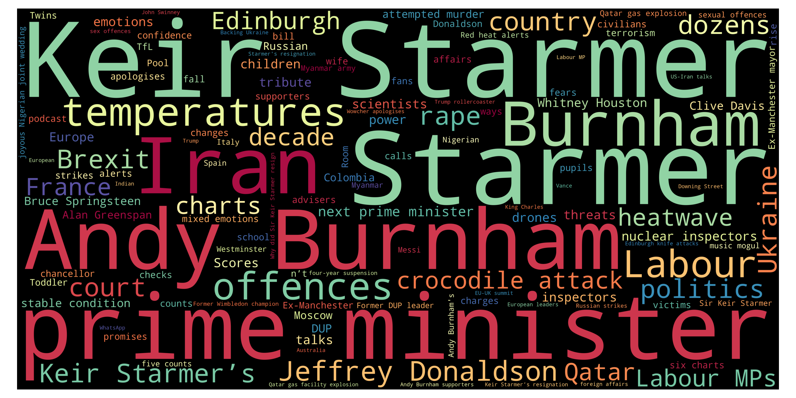
| Term | Frequency |
|---|---|
| starmer | 20 |
| iran | 11 |
| burnham | 9 |
| temperature | 7 |
| offence | 6 |
| labour | 6 |
| country | 5 |
| rape | 5 |
| court | 5 |
| dozen | 5 |
| Term | Frequency |
|---|---|
| keir starmer | 22 |
| prime minister | 14 |
| andy burnham | 13 |
| jeffrey donaldson | 6 |
| keir starmers | 5 |
| crocodile attack | 4 |
| labour mps | 4 |
| next prime minister | 4 |
| nuclear inspectors | 3 |
| whitney houston | 3 |
| Term | Current day frequency |
|---|---|
| keir starmer | 22 |
| prime minister | 14 |
| andy burnham | 13 |
| offence | 6 |
| jeffrey donaldson | 6 |
| labour | 6 |
| dozen | 5 |
| politic | 5 |
| keir starmers | 5 |
| country | 5 |
| Term | Difference | Current day frequency | Previous day frequency |
|---|---|---|---|
| starmer | 14 | 20 | 6 |
| iran | 4 | 11 | 7 |
| temperature | 4 | 7 | 3 |
| burnham | 3 | 9 | 6 |
| france | 2 | 4 | 2 |
| brexit | 2 | 5 | 3 |
| ukraine | 2 | 5 | 3 |
| decade | 2 | 4 | 2 |
| apologise | 1 | 2 | 1 |
| europe | 1 | 3 | 2 |
| Term | Difference | Current day frequency | Previous day frequency |
|---|---|---|---|
| teenager | -3 | 1 | 4 |
| trump | -3 | 2 | 5 |
| girl | -2 | 1 | 3 |
| talk | -2 | 3 | 5 |
| death | -2 | 1 | 3 |
| child | -2 | 3 | 5 |
| fear | -1 | 2 | 3 |
| state | -1 | 1 | 2 |
| strait | -1 | 1 | 2 |
| driver | -1 | 1 | 2 |
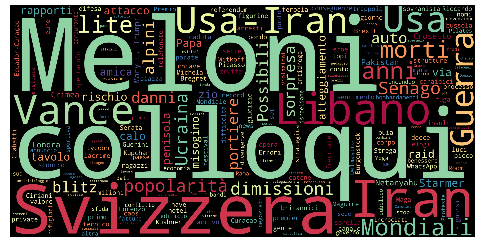
| Term | Frequency |
|---|---|
| iran | 11 |
| colloquio | 8 |
| meloni | 7 |
| anno | 5 |
| svizzera | 5 |
| donna | 4 |
| morto | 4 |
| auto | 4 |
| usa-iran | 4 |
| libano | 4 |
| Term | Frequency |
|---|---|
| regno unito | 4 |
| estrema destra | 2 |
| luigi pantisano | 2 |
| mary trump | 2 |
| sano orgoglio nazionale | 2 |
| alee rt | 1 |
| Term | Current day frequency |
|---|---|
| meloni | 7 |
| donna | 4 |
| regno unito | 4 |
| alpino | 3 |
| raduno | 3 |
| brexit | 3 |
| senago | 3 |
| mondiali | 3 |
| mese | 3 |
| bisogno | 3 |
| Term | Difference | Current day frequency | Previous day frequency |
|---|---|---|---|
| colloquio | 5 | 8 | 3 |
| iran | 3 | 11 | 8 |
| auto | 2 | 4 | 2 |
| svizzera | 2 | 5 | 3 |
| usa | 2 | 4 | 2 |
| euro | 2 | 3 | 1 |
| dimissione | 2 | 3 | 1 |
| pace | 1 | 2 | 1 |
| diritto | 1 | 2 | 1 |
| ucraina | 1 | 3 | 2 |
| Term | Difference | Current day frequency | Previous day frequency |
|---|---|---|---|
| amico | -5 | 2 | 7 |
| libano | -5 | 4 | 9 |
| turista | -5 | 1 | 6 |
| popolarità | -4 | 2 | 6 |
| incendio | -3 | 1 | 4 |
| guerra | -3 | 2 | 5 |
| calo | -3 | 2 | 5 |
| fuoco | -2 | 1 | 3 |
| primo | -2 | 1 | 3 |
| news | -1 | 1 | 2 |
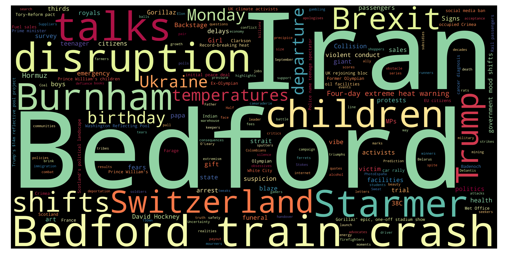
| Term | Frequency |
|---|---|
| bedford | 9 |
| iran | 7 |
| starmer | 6 |
| burnham | 6 |
| talk | 5 |
| child | 5 |
| trump | 5 |
| teenager | 4 |
| monday | 4 |
| departure | 4 |
| Term | Frequency |
|---|---|
| bedford train crash | 6 |
| four heat warning | 3 |
| david hockney | 2 |
| violent conduct | 2 |
| initial peace deal | 2 |
| anti muslim | 2 |
| anti muslim attacks | 2 |
| washington reflecting pool | 2 |
| former olympian | 2 |
| ethiopia pm party | 2 |
| Term | Current day frequency |
|---|---|
| child | 5 |
| teenager | 4 |
| departure | 4 |
| switzerland | 4 |
| monday | 4 |
| four heat warning | 3 |
| attack | 3 |
| birthday | 3 |
| girl | 3 |
| death | 3 |
| Term | Difference | Current day frequency | Previous day frequency |
|---|---|---|---|
| burnham | 4 | 6 | 2 |
| talk | 3 | 5 | 2 |
| boy | 2 | 3 | 1 |
| bedford train crash | 2 | 6 | 4 |
| starmer | 2 | 6 | 4 |
| arrest | 2 | 3 | 1 |
| way | 1 | 2 | 1 |
| mps | 1 | 2 | 1 |
| decade | 1 | 2 | 1 |
| protest | 1 | 2 | 1 |
| Term | Difference | Current day frequency | Previous day frequency |
|---|---|---|---|
| temperature | -2 | 3 | 5 |
| leader | -1 | 1 | 2 |
| hormuz | -1 | 2 | 3 |
| collision | -1 | 1 | 2 |
| ukraine | -1 | 3 | 4 |
| policy | -1 | 1 | 2 |
| driver | -1 | 2 | 3 |
| europe | -1 | 2 | 3 |
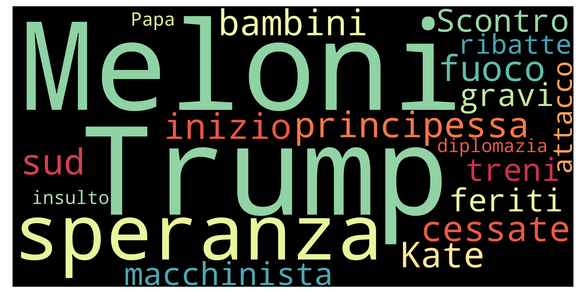
| Term | Frequency |
|---|---|
| premier | 9 |
| libano | 9 |
| iran | 8 |
| amico | 7 |
| popolarità | 6 |
| moglie | 6 |
| turista | 6 |
| guerra | 5 |
| calo | 5 |
| morto | 5 |
| Term | Frequency |
|---|---|
| santo domingo | 7 |
| repubblica dominicana | 3 |
| mr bean | 2 |
| francesca valentino | 2 |
| air force one | 2 |
| porto torres | 2 |
| usa iran | 2 |
| scontro meloni trump | 2 |
| scontro meloni trump salvini | 2 |
| Term | Current day frequency |
|---|---|
| santo domingo | 7 |
| turista | 6 |
| popolarità | 6 |
| moglie | 6 |
| spagna | 5 |
| calo | 5 |
| passaporto | 4 |
| resort | 4 |
| giudizio | 4 |
| incendio | 4 |
| Term | Difference | Current day frequency | Previous day frequency |
|---|---|---|---|
| iran | 7 | 8 | 1 |
| amico | 6 | 7 | 1 |
| premier | 5 | 9 | 4 |
| accordo | 3 | 4 | 1 |
| morto | 3 | 5 | 2 |
| netanyahu | 2 | 4 | 2 |
| usa-iran | 2 | 4 | 2 |
| colloquio | 2 | 3 | 1 |
| sanchez | 2 | 3 | 1 |
| meloni-trump | 2 | 4 | 2 |
| Term | Difference | Current day frequency | Previous day frequency |
|---|---|---|---|
| attacco | -5 | 1 | 6 |
| israele | -4 | 2 | 6 |
| ucraina | -3 | 2 | 5 |
| leader | -3 | 1 | 4 |
| giorno | -2 | 1 | 3 |
| tregua | -2 | 1 | 3 |
| presidente | -2 | 1 | 3 |
| solidarietà | -2 | 1 | 3 |
| migranti | -2 | 1 | 3 |
| parola | -2 | 2 | 4 |
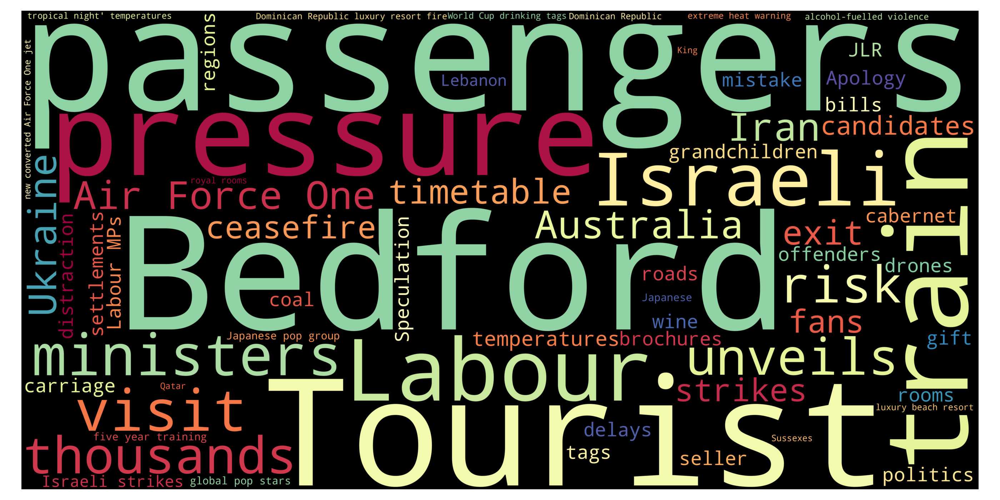
| Term | Frequency |
|---|---|
| bedford | 9 |
| iran | 7 |
| israeli | 6 |
| temperature | 5 |
| trump | 5 |
| lebanon | 5 |
| condition | 4 |
| passenger | 4 |
| starmer | 4 |
| edinburgh | 4 |
| Term | Frequency |
|---|---|
| bedford train crash | 4 |
| heat warning | 3 |
| c forecast | 3 |
| alcohol bans | 3 |
| moscow oil refinery attack | 2 |
| russia war | 2 |
| steve rosenberg | 2 |
| israeli occupied southern lebanon | 2 |
| bolivian president | 2 |
| trump meloni row intensifies | 2 |
| Term | Current day frequency |
|---|---|
| israeli | 6 |
| ukraine | 4 |
| bedford train crash | 4 |
| passenger | 4 |
| condition | 4 |
| edinburgh | 4 |
| tourist | 3 |
| alcohol bans | 3 |
| c forecast | 3 |
| bbc | 3 |
| Term | Difference | Current day frequency | Previous day frequency |
|---|---|---|---|
| bedford | 6 | 9 | 3 |
| temperature | 4 | 5 | 1 |
| hormuz | 2 | 3 | 1 |
| driver | 2 | 3 | 1 |
| fear | 2 | 3 | 1 |
| lebanon | 2 | 5 | 3 |
| heat warning | 1 | 3 | 2 |
| ally | 1 | 3 | 2 |
| city | 1 | 2 | 1 |
| candidate | 1 | 2 | 1 |
| Term | Difference | Current day frequency | Previous day frequency |
|---|---|---|---|
| burnham | -14 | 2 | 16 |
| election | -12 | 2 | 14 |
| starmer | -10 | 4 | 14 |
| labour | -9 | 2 | 11 |
| trump | -5 | 5 | 10 |
| fan | -2 | 1 | 3 |
| israel | -2 | 4 | 6 |
| boy | -2 | 1 | 3 |
| iran | -2 | 7 | 9 |
| ceasefire | -2 | 1 | 3 |
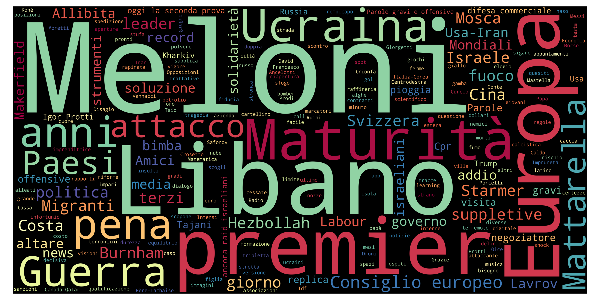
| Term | Frequency |
|---|---|
| libano | 9 |
| attacco | 6 |
| israele | 6 |
| maturità | 5 |
| europa | 5 |
| ucraina | 5 |
| leader | 4 |
| premier | 4 |
| allibita | 4 |
| parola | 4 |
| Term | Frequency |
|---|---|
| consiglio europeo | 5 |
| seconda prova | 2 |
| igor protti | 2 |
| scontro totale | 2 |
| raid israeliani | 2 |
| parole gravi offensive | 2 |
| alta tensione meloni trump | 2 |
| alta tensione | 2 |
| Term | Current day frequency |
|---|---|
| libano | 9 |
| allibita | 4 |
| premier | 4 |
| hezbollah | 3 |
| migranti | 3 |
| suppletiva | 3 |
| solidarietà | 3 |
| fuoco | 3 |
| burnham | 3 |
| presidente | 3 |
| Term | Difference | Current day frequency | Previous day frequency |
|---|---|---|---|
| israele | 3 | 6 | 3 |
| leader | 3 | 4 | 1 |
| parola | 3 | 4 | 1 |
| europa | 3 | 5 | 2 |
| attacco | 2 | 6 | 4 |
| consiglio europeo | 2 | 5 | 3 |
| ultimo | 1 | 2 | 1 |
| addio | 1 | 2 | 1 |
| governo | 1 | 2 | 1 |
| media | 1 | 2 | 1 |
| Term | Difference | Current day frequency | Previous day frequency |
|---|---|---|---|
| trump | -10 | 2 | 12 |
| mosca | -5 | 3 | 8 |
| iran | -5 | 1 | 6 |
| intesa | -4 | 1 | 5 |
| crosetto | -3 | 1 | 4 |
| schlein | -2 | 1 | 3 |
| vannacci | -2 | 1 | 3 |
| ucraina | -2 | 5 | 7 |
| tavolo | -1 | 1 | 2 |
| minuto | -1 | 1 | 2 |
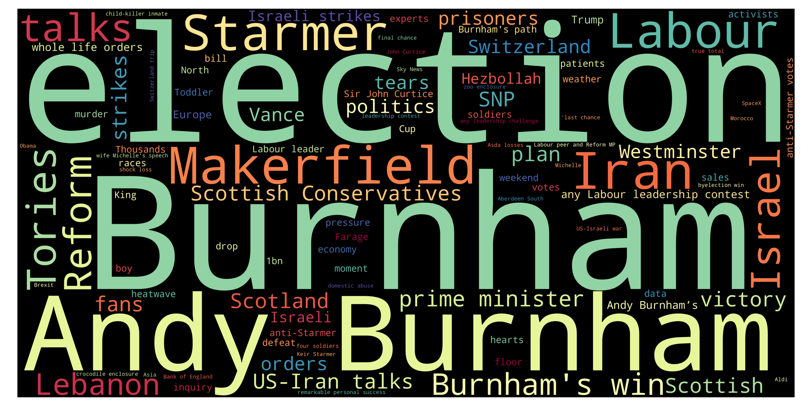
| Term | Frequency |
|---|---|
| burnham | 16 |
| makerfield | 15 |
| election | 14 |
| starmer | 14 |
| labour | 11 |
| trump | 10 |
| iran | 9 |
| israel | 6 |
| photo | 5 |
| italy | 5 |
| Term | Frequency |
|---|---|
| andy burnham | 15 |
| andy burnhams | 8 |
| keir starmer | 6 |
| burnham win | 6 |
| prime minister | 4 |
| labour mps | 3 |
| whole life orders | 3 |
| unauthorised control | 3 |
| andy burnham makerfield win | 2 |
| henry zeffman | 2 |
| Term | Current day frequency |
|---|---|
| burnham | 16 |
| andy burnhams | 8 |
| burnham win | 6 |
| israel | 6 |
| italy | 5 |
| attack | 4 |
| prime minister | 4 |
| bill | 4 |
| weekend | 4 |
| disorder | 3 |
| Term | Difference | Current day frequency | Previous day frequency |
|---|---|---|---|
| andy burnham | 13 | 15 | 2 |
| labour | 10 | 11 | 1 |
| starmer | 10 | 14 | 4 |
| makerfield | 9 | 15 | 6 |
| trump | 8 | 10 | 2 |
| election | 6 | 14 | 8 |
| photo | 4 | 5 | 1 |
| keir starmer | 4 | 6 | 2 |
| death | 3 | 4 | 1 |
| prisoner | 2 | 4 | 2 |
| Term | Difference | Current day frequency | Previous day frequency |
|---|---|---|---|
| price | -5 | 1 | 6 |
| iran | -3 | 9 | 12 |
| teenager | -2 | 2 | 4 |
| fee | -2 | 1 | 3 |
| europe | -2 | 2 | 4 |
| voter | -2 | 1 | 3 |
| term | -2 | 1 | 3 |
| war | -2 | 2 | 4 |
| medium | -2 | 1 | 3 |
| offence | -1 | 1 | 2 |
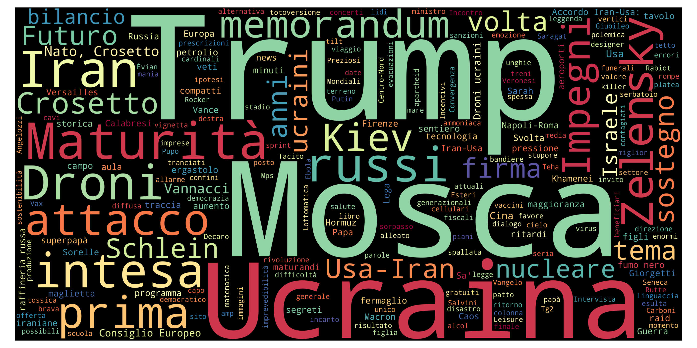
| Term | Frequency |
|---|---|
| trump | 12 |
| mosca | 8 |
| ucraina | 7 |
| maturità | 6 |
| iran | 6 |
| intesa | 5 |
| russo | 5 |
| drone | 5 |
| attacco | 4 |
| zelensky | 4 |
| Term | Frequency |
|---|---|
| nato crosetto | 3 |
| consiglio europeo | 3 |
| droni ucraini | 3 |
| fumo nero | 2 |
| accordo iran usa | 2 |
| raffineria russa | 2 |
| iran usa | 2 |
| Term | Current day frequency |
|---|---|
| mosca | 8 |
| maturità | 6 |
| crosetto | 4 |
| nato crosetto | 3 |
| schlein | 3 |
| nucleare | 3 |
| droni ucraini | 3 |
| cina | 3 |
| sostegno | 3 |
| consiglio europeo | 3 |
| Term | Difference | Current day frequency | Previous day frequency |
|---|---|---|---|
| trump | 9 | 12 | 3 |
| intesa | 4 | 5 | 1 |
| drone | 3 | 5 | 2 |
| attacco | 3 | 4 | 1 |
| volta | 2 | 3 | 1 |
| tema | 2 | 3 | 1 |
| anno | 2 | 3 | 1 |
| kiev | 2 | 4 | 2 |
| firma | 1 | 3 | 2 |
| israele | 1 | 3 | 2 |
| Term | Difference | Current day frequency | Previous day frequency |
|---|---|---|---|
| meloni | -12 | 1 | 13 |
| iran | -10 | 6 | 16 |
| leader | -5 | 1 | 6 |
| ucraina | -5 | 7 | 12 |
| usa | -4 | 3 | 7 |
| punto | -3 | 1 | 4 |
| addio | -2 | 1 | 3 |
| usa-iran | -2 | 3 | 5 |
| madre | -2 | 1 | 3 |
| guerra | -2 | 2 | 4 |
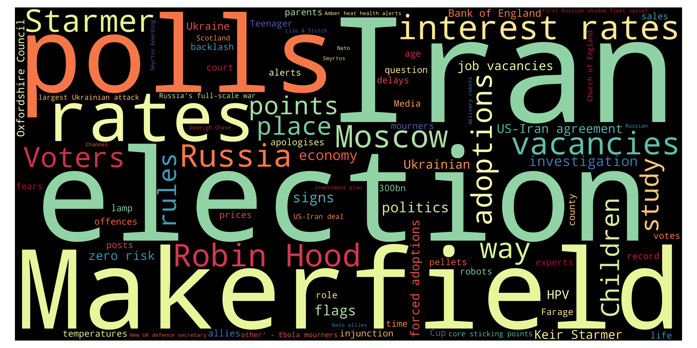
| Term | Frequency |
|---|---|
| iran | 12 |
| election | 8 |
| price | 6 |
| makerfield | 6 |
| poll | 5 |
| study | 5 |
| war | 4 |
| rate | 4 |
| money | 4 |
| teenager | 4 |
| Term | Frequency |
|---|---|
| preston davey | 5 |
| crocodile enclosure | 4 |
| us iran deal | 4 |
| interest rates | 4 |
| lib dem | 4 |
| michel barnier | 4 |
| attempted murder | 3 |
| zack polanski | 3 |
| cameron thomas | 3 |
| inescapable question | 2 |
| Term | Current day frequency |
|---|---|
| preston davey | 5 |
| michel barnier | 4 |
| teenager | 4 |
| nato | 4 |
| moscow | 4 |
| us iran deal | 4 |
| money | 4 |
| crocodile enclosure | 4 |
| lib dem | 4 |
| europe | 4 |
| Term | Difference | Current day frequency | Previous day frequency |
|---|---|---|---|
| price | 5 | 6 | 1 |
| iran | 4 | 12 | 8 |
| poll | 3 | 5 | 2 |
| makerfield | 2 | 6 | 4 |
| war | 2 | 4 | 2 |
| way | 2 | 3 | 1 |
| study | 2 | 5 | 3 |
| interest rates | 2 | 4 | 2 |
| power | 1 | 2 | 1 |
| timeline | 1 | 2 | 1 |
| Term | Difference | Current day frequency | Previous day frequency |
|---|---|---|---|
| trump | -7 | 2 | 9 |
| russian | -6 | 2 | 8 |
| sale | -3 | 1 | 4 |
| minister | -3 | 1 | 4 |
| body | -3 | 1 | 4 |
| saving | -2 | 1 | 3 |
| starmer | -2 | 4 | 6 |
| labour | -2 | 1 | 3 |
| brexit | -2 | 3 | 5 |
| record | -2 | 1 | 3 |
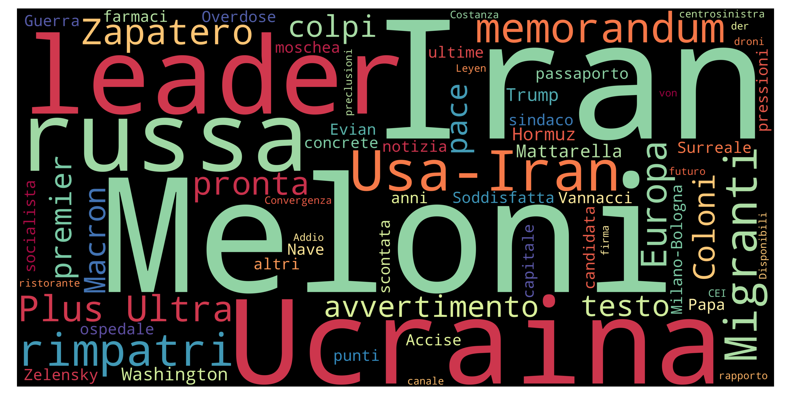
| Term | Frequency |
|---|---|
| iran | 16 |
| meloni | 13 |
| ucraina | 12 |
| usa | 7 |
| russo | 6 |
| leader | 6 |
| rimpatro | 6 |
| migranti | 6 |
| memorandum | 5 |
| usa-iran | 5 |
| Term | Frequency |
|---|---|
| plus ultra | 4 |
| oltre ore | 2 |
| andrea sempio | 2 |
| stati uniti | 2 |
| caso plus ultra giorno interrogatorio zapatero | 2 |
| ogni addebito | 2 |
| caso plus ultra ore interrogatorio zapatero | 2 |
| av milano bologna | 2 |
| via libera | 2 |
| sostegno incrollabile | 2 |
| Term | Current day frequency |
|---|---|
| meloni | 13 |
| migranti | 6 |
| memorandum | 5 |
| zapatero | 4 |
| plus ultra | 4 |
| europa | 4 |
| punto | 4 |
| miliardo | 3 |
| fed | 3 |
| mondiali | 3 |
| Term | Difference | Current day frequency | Previous day frequency |
|---|---|---|---|
| iran | 9 | 16 | 7 |
| ucraina | 9 | 12 | 3 |
| usa | 3 | 7 | 4 |
| tasso | 3 | 4 | 1 |
| rimpatro | 3 | 6 | 3 |
| madre | 2 | 3 | 1 |
| addio | 2 | 3 | 1 |
| macron | 2 | 4 | 2 |
| sindaco | 2 | 3 | 1 |
| avvertimento | 1 | 3 | 2 |
| Term | Difference | Current day frequency | Previous day frequency |
|---|---|---|---|
| trump | -14 | 3 | 17 |
| anno | -4 | 1 | 5 |
| attacco | -3 | 1 | 4 |
| libero | -3 | 2 | 5 |
| morto | -3 | 1 | 4 |
| via libera | -2 | 2 | 4 |
| evian | -2 | 2 | 4 |
| zelensky | -2 | 3 | 5 |
| russia | -2 | 2 | 4 |
| terremoto | -1 | 1 | 2 |
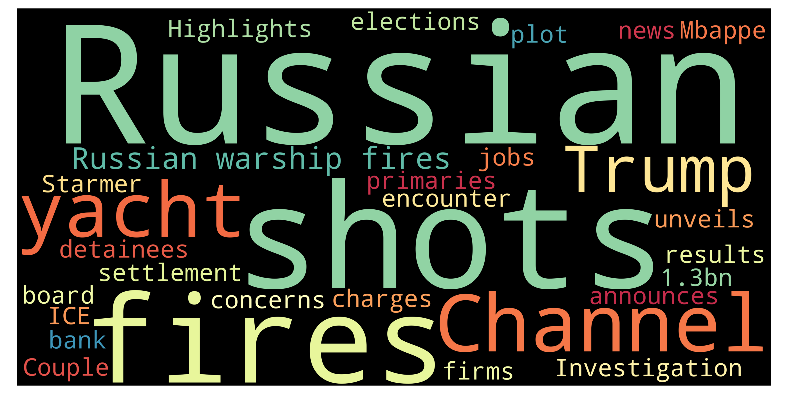
| Term | Frequency |
|---|---|
| election | 9 |
| trump | 9 |
| iran | 8 |
| burnham | 8 |
| russian | 8 |
| starmer | 6 |
| child | 5 |
| life | 5 |
| government | 5 |
| shot | 5 |
| Term | Frequency |
|---|---|
| russian warship | 4 |
| leadership challenge | 3 |
| eight women | 3 |
| serial killer | 3 |
| keir starmer | 3 |
| andy burnham | 3 |
| oil us military blockade | 2 |
| immediate leadership challenge | 2 |
| job cuts | 2 |
| trump criticism | 2 |
| Term | Current day frequency |
|---|---|
| burnham | 8 |
| brexit | 5 |
| israeli | 5 |
| body | 4 |
| yacht | 4 |
| sale | 4 |
| bbc | 4 |
| ukraine | 3 |
| briton | 3 |
| meghan | 3 |
| Term | Difference | Current day frequency | Previous day frequency |
|---|---|---|---|
| election | 6 | 9 | 3 |
| child | 4 | 5 | 1 |
| couple | 4 | 5 | 1 |
| trump | 3 | 9 | 6 |
| government | 2 | 5 | 3 |
| streeting | 2 | 3 | 1 |
| cut | 2 | 4 | 2 |
| russian warship | 2 | 4 | 2 |
| datum | 2 | 3 | 1 |
| life | 2 | 5 | 3 |
| Term | Difference | Current day frequency | Previous day frequency |
|---|---|---|---|
| russian | -12 | 8 | 20 |
| channel | -6 | 2 | 8 |
| iran | -5 | 8 | 13 |
| starmer | -5 | 6 | 11 |
| shot | -4 | 5 | 9 |
| attack | -3 | 1 | 4 |
| fire | -3 | 3 | 6 |
| amazon | -2 | 2 | 4 |
| medium | -2 | 2 | 4 |
| fan | -1 | 1 | 2 |
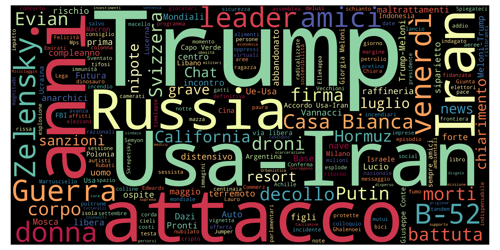
| Term | Frequency |
|---|---|
| trump | 17 |
| iran | 7 |
| usa-iran | 6 |
| russo | 6 |
| amico | 6 |
| libero | 5 |
| zelensky | 5 |
| leader | 5 |
| anno | 5 |
| venerdì | 4 |
| Term | Frequency |
|---|---|
| casa bianca | 5 |
| via libera | 4 |
| accordo usa iran | 2 |
| papa leone | 2 |
| torre milano | 2 |
| giorgia meloni | 2 |
| yacht britannico | 2 |
| sempre amici | 2 |
| giuseppe conte | 2 |
| Term | Current day frequency |
|---|---|
| amico | 6 |
| via libera | 4 |
| russia | 4 |
| manica | 3 |
| lucerna | 3 |
| polonia | 3 |
| incontro | 3 |
| resort | 3 |
| california | 3 |
| corpo | 3 |
| Term | Difference | Current day frequency | Previous day frequency |
|---|---|---|---|
| trump | 14 | 17 | 3 |
| usa-iran | 5 | 6 | 1 |
| leader | 3 | 5 | 2 |
| casa bianca | 3 | 5 | 2 |
| guerra | 3 | 4 | 1 |
| libero | 3 | 5 | 2 |
| b-52 | 3 | 4 | 1 |
| m5s | 2 | 3 | 1 |
| primo | 2 | 3 | 1 |
| compleanno | 2 | 3 | 1 |
| Term | Difference | Current day frequency | Previous day frequency |
|---|---|---|---|
| iran | -5 | 7 | 12 |
| figlio | -4 | 1 | 5 |
| pronto | -4 | 1 | 5 |
| anno | -4 | 5 | 9 |
| usa | -4 | 4 | 8 |
| ucraina | -3 | 3 | 6 |
| minore | -3 | 1 | 4 |
| volo | -2 | 1 | 3 |
| strategico | -1 | 1 | 2 |
| lega | -1 | 1 | 2 |
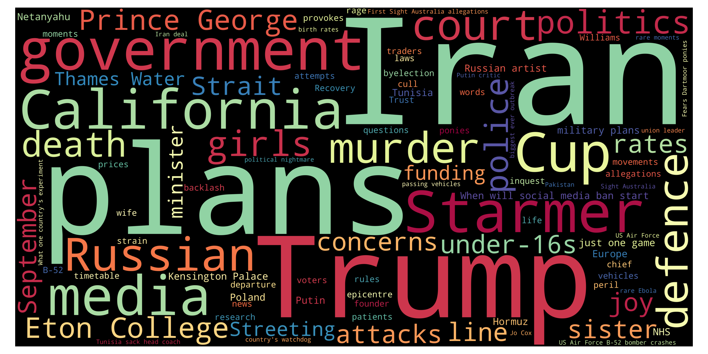
| Term | Frequency |
|---|---|
| russian | 20 |
| iran | 13 |
| starmer | 11 |
| shot | 9 |
| police | 8 |
| channel | 8 |
| court | 7 |
| fire | 6 |
| trump | 6 |
| medium | 4 |
| Term | Frequency |
|---|---|
| prince george | 6 |
| eton college | 6 |
| media ban | 4 |
| russian warship fires | 3 |
| registered yacht | 3 |
| thames water | 3 |
| russian artist | 3 |
| kensington palace | 3 |
| defence spending plan | 3 |
| g summit | 3 |
| Term | Current day frequency |
|---|---|
| shot | 9 |
| police | 8 |
| channel | 8 |
| court | 7 |
| prince george | 6 |
| fire | 6 |
| eton college | 6 |
| amazon | 4 |
| row | 4 |
| pony | 4 |
| Term | Difference | Current day frequency | Previous day frequency |
|---|---|---|---|
| russian | 11 | 20 | 9 |
| rate | 3 | 4 | 1 |
| minister | 2 | 4 | 2 |
| life | 2 | 3 | 1 |
| victory | 1 | 2 | 1 |
| relation | 1 | 2 | 1 |
| israel | 1 | 3 | 2 |
| lebanon | 1 | 3 | 2 |
| model | 1 | 2 | 1 |
| girl | 1 | 4 | 3 |
| Term | Difference | Current day frequency | Previous day frequency |
|---|---|---|---|
| medium | -13 | 4 | 17 |
| media ban | -10 | 4 | 14 |
| iran | -10 | 13 | 23 |
| under-16 | -8 | 1 | 9 |
| trump | -7 | 6 | 13 |
| temperature | -4 | 1 | 5 |
| attack | -3 | 4 | 7 |
| reform | -3 | 1 | 4 |
| parent | -3 | 1 | 4 |
| backlash | -2 | 1 | 3 |
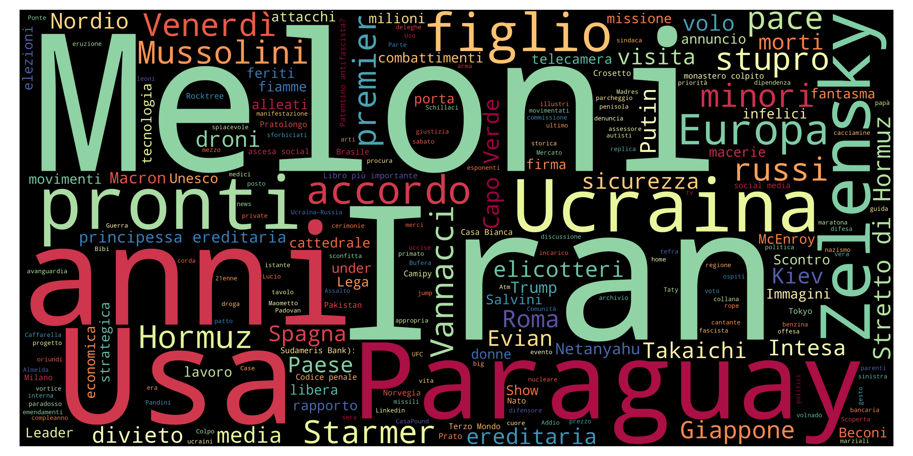
| Term | Frequency |
|---|---|
| meloni | 13 |
| iran | 12 |
| anno | 9 |
| usa | 8 |
| paraguay | 7 |
| ucraina | 6 |
| zelensky | 5 |
| figlio | 5 |
| pronto | 5 |
| europa | 5 |
| Term | Frequency |
|---|---|
| stretto di hormuz | 4 |
| capo verde | 3 |
| principessa ereditaria | 3 |
| libro importante | 2 |
| monastero colpito | 2 |
| social media | 2 |
| casa bianca | 2 |
| terzo mondo | 2 |
| codice penale | 2 |
| patentino antifascista | 2 |
| Term | Current day frequency |
|---|---|
| paraguay | 7 |
| pronto | 5 |
| stretto di hormuz | 4 |
| giappone | 4 |
| stupro | 4 |
| venerdì | 4 |
| mussolini | 4 |
| minore | 4 |
| premier | 4 |
| roma | 4 |
| Term | Difference | Current day frequency | Previous day frequency |
|---|---|---|---|
| usa | 5 | 8 | 3 |
| meloni | 5 | 13 | 8 |
| anno | 4 | 9 | 5 |
| figlio | 4 | 5 | 1 |
| ucraina | 4 | 6 | 2 |
| pace | 3 | 4 | 1 |
| iran | 3 | 12 | 9 |
| morto | 2 | 3 | 1 |
| europa | 2 | 5 | 3 |
| evian | 2 | 3 | 1 |
| Term | Difference | Current day frequency | Previous day frequency |
|---|---|---|---|
| femminicidio | -7 | 1 | 8 |
| guerra | -4 | 1 | 5 |
| giorno | -3 | 1 | 4 |
| accordo | -3 | 4 | 7 |
| firma | -3 | 2 | 5 |
| milione | -2 | 2 | 4 |
| replica | -2 | 1 | 3 |
| settimana | -1 | 1 | 2 |
| russo | -1 | 4 | 5 |
| scontro | -1 | 2 | 3 |
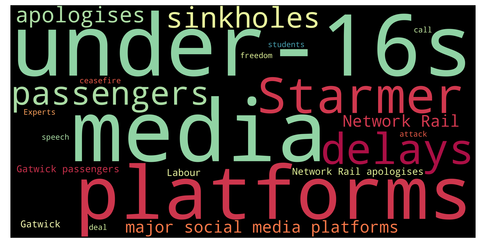
| Term | Frequency |
|---|---|
| iran | 23 |
| medium | 17 |
| trump | 13 |
| starmer | 10 |
| under-16 | 9 |
| russian | 9 |
| attack | 7 |
| russia | 6 |
| temperature | 5 |
| labour | 5 |
| Term | Frequency |
|---|---|
| media ban | 14 |
| palestine action | 7 |
| iran deal | 5 |
| arson attacks | 4 |
| court of appeal | 4 |
| keir starmer | 4 |
| us iran deal | 4 |
| russian shadow fleet tanker | 3 |
| roy hattersley | 3 |
| henry nowaks | 3 |
| Term | Current day frequency |
|---|---|
| attack | 7 |
| palestine action | 7 |
| russia | 6 |
| labour | 5 |
| iran deal | 5 |
| court of appeal | 4 |
| us iran deal | 4 |
| arson attacks | 4 |
| california | 4 |
| rape | 4 |
| Term | Difference | Current day frequency | Previous day frequency |
|---|---|---|---|
| iran | 21 | 23 | 2 |
| media ban | 11 | 14 | 3 |
| medium | 8 | 17 | 9 |
| starmer | 7 | 10 | 3 |
| trump | 6 | 13 | 7 |
| temperature | 4 | 5 | 1 |
| under-16 | 4 | 9 | 5 |
| reform | 3 | 4 | 1 |
| job | 2 | 3 | 1 |
| backlash | 2 | 3 | 1 |
| Term | Difference | Current day frequency | Previous day frequency |
|---|---|---|---|
| minister | -5 | 2 | 7 |
| voter | -3 | 1 | 4 |
| israel | -2 | 2 | 4 |
| london | -2 | 4 | 6 |
| national | -2 | 1 | 3 |
| housing | -2 | 1 | 3 |
| target | -1 | 2 | 3 |
| farage | -1 | 1 | 2 |
| family | -1 | 1 | 2 |
| online | -1 | 1 | 2 |
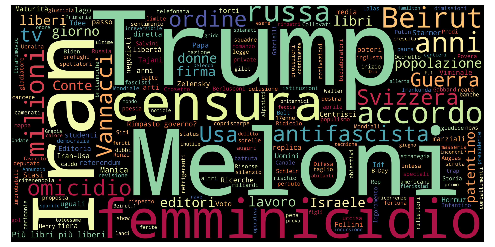
| Term | Frequency |
|---|---|
| iran | 9 |
| femminicidio | 8 |
| meloni | 8 |
| accordo | 7 |
| censura | 6 |
| guerra | 5 |
| zelensky | 5 |
| anno | 5 |
| firma | 5 |
| russo | 5 |
| Term | Frequency |
|---|---|
| libri liberi | 3 |
| iran usa | 3 |
| casa bianca | 2 |
| donald trump | 2 |
| rimpasto governo | 2 |
| Term | Current day frequency |
|---|---|
| femminicidio | 8 |
| censura | 6 |
| svizzera | 5 |
| firma | 5 |
| beirut | 4 |
| omicidio | 4 |
| antifascista | 4 |
| putin | 4 |
| popolazione | 3 |
| scontro | 3 |
| Term | Difference | Current day frequency | Previous day frequency |
|---|---|---|---|
| meloni | 5 | 8 | 3 |
| russo | 4 | 5 | 1 |
| milione | 3 | 4 | 1 |
| giorno | 3 | 4 | 1 |
| zelensky | 3 | 5 | 2 |
| ordine | 3 | 4 | 1 |
| hamilton | 2 | 3 | 1 |
| lavoro | 2 | 3 | 1 |
| studente | 1 | 2 | 1 |
| anthropic | 1 | 2 | 1 |
| Term | Difference | Current day frequency | Previous day frequency |
|---|---|---|---|
| trump | -13 | 3 | 16 |
| teheran | -4 | 2 | 6 |
| accordo | -3 | 7 | 10 |
| alpinista | -3 | 1 | 4 |
| hormuz | -2 | 2 | 4 |
| corteo | -2 | 1 | 3 |
| feccia | -2 | 1 | 3 |
| figlio | -2 | 1 | 3 |
| usa | -2 | 3 | 5 |
| evian | -1 | 1 | 2 |
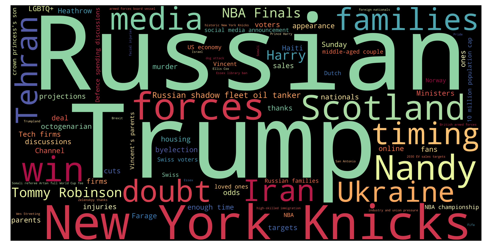
| Term | Frequency |
|---|---|
| russian | 10 |
| medium | 9 |
| minister | 7 |
| trump | 7 |
| london | 6 |
| police | 5 |
| force | 5 |
| under-16 | 5 |
| voter | 4 |
| swiss | 4 |
| Term | Frequency |
|---|---|
| tommy robinson | 5 |
| swiss voters | 4 |
| bn investment deal | 3 |
| foreign nationals | 3 |
| barcelona catalunya grand prix first | 3 |
| barcelona catalunya grand prix | 3 |
| nba finals | 3 |
| russian shadow fleet oil tanker | 3 |
| armed forces | 3 |
| media ban | 3 |
| Term | Current day frequency |
|---|---|
| russian | 10 |
| minister | 7 |
| police | 5 |
| tommy robinson | 5 |
| under-16 | 5 |
| force | 5 |
| voter | 4 |
| swiss voters | 4 |
| japan | 4 |
| target | 3 |
| Term | Difference | Current day frequency | Previous day frequency |
|---|---|---|---|
| medium | 4 | 9 | 5 |
| london | 3 | 6 | 3 |
| israel | 2 | 4 | 2 |
| swiss | 2 | 4 | 2 |
| protest | 2 | 3 | 1 |
| cut | 1 | 2 | 1 |
| israeli | 1 | 3 | 2 |
| firm | 1 | 2 | 1 |
| rate | 1 | 2 | 1 |
| justice | 1 | 2 | 1 |
| Term | Difference | Current day frequency | Previous day frequency |
|---|---|---|---|
| thousand | -3 | 1 | 4 |
| leader | -3 | 1 | 4 |
| iran | -3 | 2 | 5 |
| australia | -2 | 4 | 6 |
| trump | -2 | 7 | 9 |
| scotland | -1 | 2 | 3 |
| heart | -1 | 1 | 2 |
| cup | -1 | 2 | 3 |
| history | -1 | 1 | 2 |
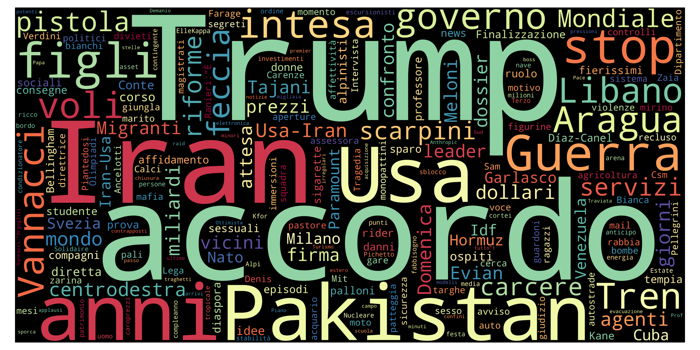
| Term | Frequency |
|---|---|
| trump | 16 |
| accordo | 10 |
| iran | 9 |
| anno | 6 |
| teheran | 6 |
| usa | 5 |
| guerra | 4 |
| alpinista | 4 |
| governo | 4 |
| vannacci | 4 |
| Term | Frequency |
|---|---|
| domani firma | 3 |
| iran usa | 3 |
| repubblica delle idee | 2 |
| futuro nazionale | 2 |
| Term | Current day frequency |
|---|---|
| alpinista | 4 |
| libano | 4 |
| hormuz | 4 |
| centrodestra | 3 |
| pakistan | 3 |
| domani firma | 3 |
| tren | 3 |
| figlio | 3 |
| iran usa | 3 |
| stop | 3 |
| Term | Difference | Current day frequency | Previous day frequency |
|---|---|---|---|
| trump | 11 | 16 | 5 |
| accordo | 7 | 10 | 3 |
| iran | 4 | 9 | 5 |
| governo | 3 | 4 | 1 |
| vannacci | 3 | 4 | 1 |
| teheran | 3 | 6 | 3 |
| volo | 2 | 3 | 1 |
| remigrazione | 1 | 2 | 1 |
| donna | 1 | 2 | 1 |
| prossimo | 1 | 2 | 1 |
| Term | Difference | Current day frequency | Previous day frequency |
|---|---|---|---|
| meloni | -4 | 3 | 7 |
| papa | -4 | 1 | 5 |
| migrante | -3 | 1 | 4 |
| roma | -3 | 2 | 5 |
| morto | -3 | 1 | 4 |
| sicurezza | -2 | 1 | 3 |
| carcere | -1 | 2 | 3 |
| presidente | -1 | 1 | 2 |
| punto | -1 | 1 | 2 |
| usa-iran | -1 | 2 | 3 |
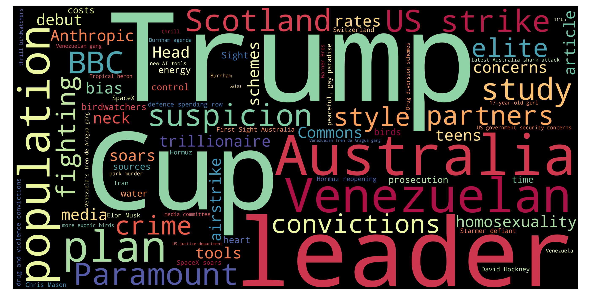
| Term | Frequency |
|---|---|
| trump | 9 |
| teenager | 7 |
| belfast | 6 |
| australia | 6 |
| medium | 5 |
| iran | 5 |
| thousand | 4 |
| suspicion | 4 |
| time | 4 |
| protester | 4 |
| Term | Frequency |
|---|---|
| police officer | 4 |
| anti racism rally | 3 |
| shark attack | 3 |
| royal family | 2 |
| red arrows | 2 |
| molly russell dad | 2 |
| molly russells | 2 |
| media restrictions | 2 |
| state media | 2 |
| air strikes | 2 |
| Term | Current day frequency |
|---|---|
| teenager | 7 |
| australia | 6 |
| venezuelan | 4 |
| police officer | 4 |
| thousand | 4 |
| leader | 4 |
| suspicion | 4 |
| plan | 3 |
| football | 3 |
| park | 3 |
| Term | Difference | Current day frequency | Previous day frequency |
|---|---|---|---|
| trump | 5 | 9 | 4 |
| belfast | 3 | 6 | 3 |
| protester | 3 | 4 | 1 |
| time | 3 | 4 | 1 |
| medium | 2 | 5 | 3 |
| debt | 1 | 2 | 1 |
| london | 1 | 3 | 2 |
| scotland | 1 | 3 | 2 |
| partner | 1 | 2 | 1 |
| talk | 1 | 2 | 1 |
| Term | Difference | Current day frequency | Previous day frequency |
|---|---|---|---|
| iran | -5 | 5 | 10 |
| israeli | -4 | 2 | 6 |
| david hockney | -3 | 2 | 5 |
| student | -2 | 1 | 3 |
| survivor | -2 | 1 | 3 |
| riot | -2 | 2 | 4 |
| spacex | -2 | 1 | 3 |
| justice | -2 | 1 | 3 |
| life | -1 | 2 | 3 |
| bbc | -1 | 3 | 4 |
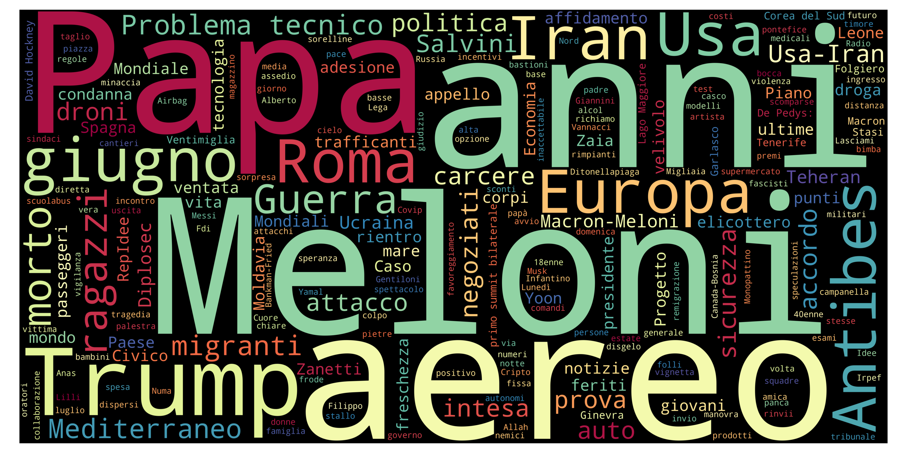
| Term | Frequency |
|---|---|
| anno | 7 |
| meloni | 7 |
| aereo | 6 |
| papa | 5 |
| trump | 5 |
| giugno | 5 |
| iran | 5 |
| usa | 5 |
| europa | 5 |
| roma | 5 |
| Term | Frequency |
|---|---|
| problema tecnico | 4 |
| lago maggiore | 2 |
| david hockney | 2 |
| corea del sud | 2 |
| primo summit bilaterale | 2 |
| de pedys | 2 |
| Term | Current day frequency |
|---|---|
| aereo | 6 |
| giugno | 5 |
| roma | 5 |
| papa | 5 |
| antibes | 5 |
| problema tecnico | 4 |
| ragazzo | 4 |
| morto | 4 |
| mediterraneo | 4 |
| carcere | 3 |
| Term | Difference | Current day frequency | Previous day frequency |
|---|---|---|---|
| trump | 3 | 5 | 2 |
| anno | 3 | 7 | 4 |
| sicurezza | 2 | 3 | 1 |
| diplosec | 2 | 3 | 1 |
| presidente | 1 | 2 | 1 |
| piano | 1 | 2 | 1 |
| teheran | 1 | 3 | 2 |
| caso | 1 | 2 | 1 |
| trafficante | 1 | 2 | 1 |
| mare | 1 | 2 | 1 |
| Term | Difference | Current day frequency | Previous day frequency |
|---|---|---|---|
| meloni | -12 | 7 | 19 |
| iran | -7 | 5 | 12 |
| kiev | -5 | 1 | 6 |
| russia | -4 | 1 | 5 |
| ucraina | -3 | 3 | 6 |
| pace | -3 | 1 | 4 |
| attacco | -3 | 3 | 6 |
| donna | -2 | 1 | 3 |
| cnn | -2 | 1 | 3 |
| migrante | -2 | 4 | 6 |
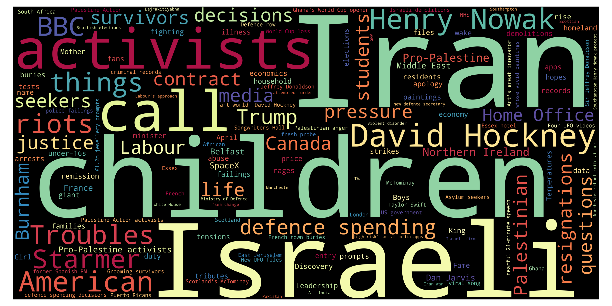
| Term | Frequency |
|---|---|
| iran | 10 |
| child | 6 |
| israeli | 6 |
| activist | 5 |
| call | 5 |
| american | 5 |
| riot | 4 |
| thing | 4 |
| starmer | 4 |
| bbc | 4 |
| Term | Frequency |
|---|---|
| david hockney | 5 |
| henry nowak | 5 |
| defence spending | 4 |
| home office | 3 |
| northern ireland | 3 |
| pro palestine | 3 |
| pro palestine activists | 3 |
| dan jarvis | 3 |
| middle east | 3 |
| defence spending decisions | 2 |
| Term | Current day frequency |
|---|---|
| israeli | 6 |
| child | 6 |
| activist | 5 |
| david hockney | 5 |
| american | 5 |
| call | 5 |
| defence spending | 4 |
| bbc | 4 |
| contract | 3 |
| survivor | 3 |
| Term | Difference | Current day frequency | Previous day frequency |
|---|---|---|---|
| iran | 4 | 10 | 6 |
| henry nowak | 3 | 5 | 2 |
| thing | 3 | 4 | 1 |
| question | 2 | 3 | 1 |
| decision | 2 | 3 | 1 |
| medium | 2 | 3 | 1 |
| seeker | 2 | 3 | 1 |
| mother | 1 | 2 | 1 |
| trump | 1 | 4 | 3 |
| homeland | 1 | 2 | 1 |
| Term | Difference | Current day frequency | Previous day frequency |
|---|---|---|---|
| belfast | -8 | 3 | 11 |
| london | -3 | 2 | 5 |
| time | -3 | 1 | 4 |
| makerfield | -3 | 1 | 4 |
| death | -3 | 1 | 4 |
| parent | -3 | 1 | 4 |
| starmer | -3 | 4 | 7 |
| election | -2 | 2 | 4 |
| protester | -2 | 1 | 3 |
| politic | -2 | 1 | 3 |
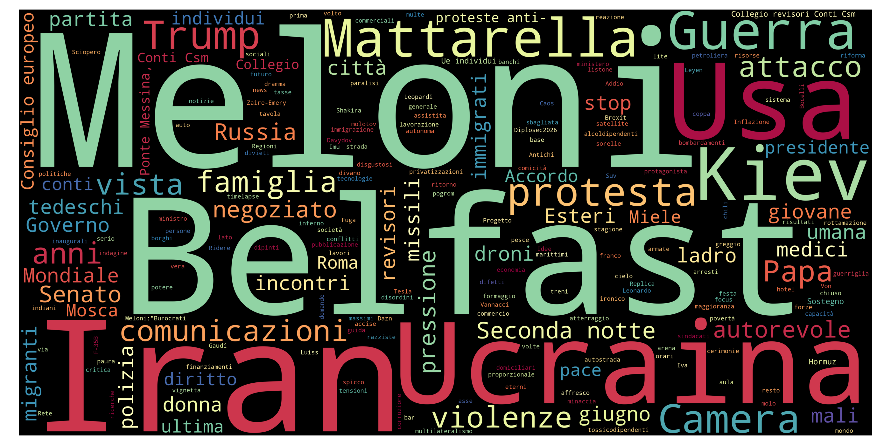
| Term | Frequency |
|---|---|
| meloni | 19 |
| iran | 12 |
| belfast | 9 |
| attacco | 6 |
| migrante | 6 |
| ucraina | 6 |
| camera | 6 |
| kiev | 6 |
| russia | 5 |
| usa | 5 |
| Term | Frequency |
|---|---|
| seconda notte | 4 |
| falso allarme | 3 |
| milano cortina | 2 |
| regno unito | 2 |
| papa leone | 2 |
| consiglio europeo | 2 |
| proteste anti | 2 |
| mediterraneo strategico | 2 |
| m5s silvestri | 2 |
| m s silvestri | 2 |
| Term | Current day frequency |
|---|---|
| camera | 6 |
| kiev | 6 |
| seconda notte | 4 |
| europa | 4 |
| canarie | 4 |
| lockdown | 4 |
| eurozona | 3 |
| cnn | 3 |
| pressione | 3 |
| comunicazione | 3 |
| Term | Difference | Current day frequency | Previous day frequency |
|---|---|---|---|
| meloni | 11 | 19 | 8 |
| iran | 7 | 12 | 5 |
| russia | 3 | 5 | 2 |
| salvini | 3 | 4 | 1 |
| pace | 3 | 4 | 1 |
| donna | 2 | 3 | 1 |
| ucraina | 2 | 6 | 4 |
| accordo | 2 | 3 | 1 |
| migrante | 2 | 6 | 4 |
| attacco | 2 | 6 | 4 |
| Term | Difference | Current day frequency | Previous day frequency |
|---|---|---|---|
| trump | -8 | 2 | 10 |
| epstein | -5 | 1 | 6 |
| guerra | -3 | 4 | 7 |
| protesta | -3 | 2 | 5 |
| tassa | -2 | 1 | 3 |
| decreto | -2 | 1 | 3 |
| violenza | -2 | 2 | 4 |
| conte | -2 | 1 | 3 |
| regola | -2 | 1 | 3 |
| belfast | -2 | 9 | 11 |
| Term | Frequency |
|---|---|
| belfast | 11 |
| healey | 8 |
| starmer | 7 |
| iran | 6 |
| risk | 5 |
| london | 5 |
| scientist | 4 |
| election | 4 |
| time | 4 |
| parent | 4 |
| Term | Frequency |
|---|---|
| john healey | 5 |
| defence plan | 5 |
| stolen phones | 4 |
| jeffrey donaldson | 4 |
| defence secretary | 3 |
| assassination plot | 3 |
| cold blooded professional hitman | 3 |
| el nino | 3 |
| home office | 3 |
| jay clayton | 3 |
| Term | Current day frequency |
|---|---|
| healey | 8 |
| starmer | 7 |
| london | 5 |
| defence plan | 5 |
| john healey | 5 |
| protest | 4 |
| phone | 4 |
| parent | 4 |
| death | 4 |
| jeffrey donaldson | 4 |
| Term | Difference | Current day frequency | Previous day frequency |
|---|---|---|---|
| scientist | 3 | 4 | 1 |
| election | 3 | 4 | 1 |
| riot | 3 | 4 | 1 |
| charge | 2 | 3 | 1 |
| trial | 2 | 3 | 1 |
| time | 2 | 4 | 2 |
| driver | 2 | 3 | 1 |
| protester | 2 | 3 | 1 |
| risk | 1 | 5 | 4 |
| labour | 1 | 2 | 1 |
| Term | Difference | Current day frequency | Previous day frequency |
|---|---|---|---|
| belfast | -6 | 11 | 17 |
| trump | -5 | 3 | 8 |
| iran | -5 | 6 | 11 |
| strike | -2 | 3 | 5 |
| violence | -2 | 3 | 5 |
| price | -1 | 3 | 4 |
| way | -1 | 2 | 3 |
| question | -1 | 1 | 2 |
| henry nowak | -1 | 2 | 3 |
| information | -1 | 1 | 2 |